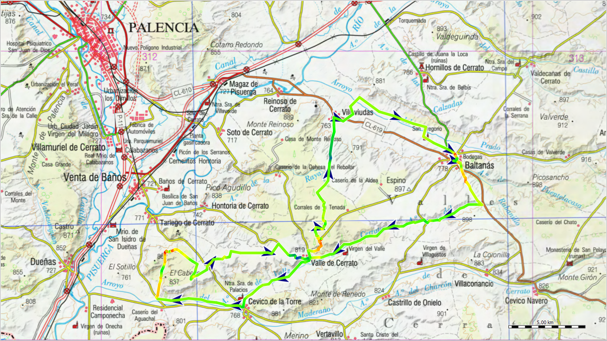
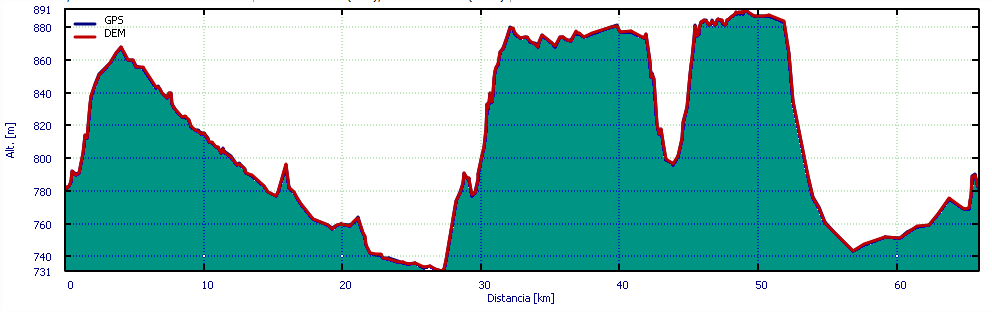

Arroyo del Rabanillo¶
Hoja de planificación. Podría contener errores

Un recorrido siguiendo al Arroyo del Rabanillo, en pleno Cerrato Palentino. Recorriendo el valle que este arroyo forma sobre los terrenos calizos y arcillosos de la zona por donde discurre, y conociendo localidades de la zona como Baltanás, Villaviudas, Cevico de la Torre, o el despoblado de la Dehesa de Tablada.
Ficha técnica¶

| Distancia | Días | Tipo | Ascensión total | Punto más alto | Punto más bajo | Pendiente mayor (ascenso) | Pendiente mayor (descenso) |
|---|---|---|---|---|---|---|---|
| 66 km | 1 | Circular | 405 m | 891 msnm | 731 msnm | 6'5º | -5'6º |
Plan de ruta¶
Descripción¶
El Cerrato es una zona de tierras onduladas que forman constantes cerros calcáreos, recubiertos de rocas calizas en los páramos, que han protegido el terreno de la erosión de los arroyos como el que es objeto de nuestro recorrido principal.
El recorrido principal se realiza por la pequeña cuenca del arroyo del Rabanillo hasta su desembocadura.
En la parte superior de estos cerros debemos esperar mucho pedregal consecuencia de estas rocas calizas sedimentarias, a pesar de eso los caminos suelen estar en buen estado y son de rodar cómodo ya que han tenido buen mantenimiento, como consecuencia de su utilización para el acceso de la maquinaria a las tierras de cultivo.
Las altitudes de estas zonas se encuentran entre los 700 y 900 metros por lo que no debemos pensar en encontrar pendientes importantes prolongadas.
Sin embargo, conectando páramos y valles debemos esperar cuestas importantes que nos harán bajar de la bicicleta en alguna ocasión.
Próximo al recorrido y principalmente en los lugares de páramo es fácil encontrar antiguos corrales de piedra para rebaños de ovejas.
Localidades¶
-
Baltanás es una localidad de cerca de 1200 habitantes que dispone de muchos servicios como alojamientos, alimentación, bares, un par de zonas de picnic entre otras cosas. Destaca por ejemplo la zona de bodegas o el museo del Cerrato castellano. Las bodegas de Baltanás situadas en el Cerro del Castillo, forman el mayor conjunto de bodegas subterráneas de España.
-
Villaviudas con 360 habitantes tiene bar y piscina.
-
Próximo a Villaviudas se encuentra la Dehesa de Tablada que en su momento, durante el siglo XIX fue una explotación agrícola y ganadera importante y próspera aunque en la actualidad es un despoblado.
-
En Castrillo de Onielo, Valle de Cerrato y Hontoria de Cerrato hay teleclubs, que suelen tener horarios limitados.
-
En Cevico de la Torre hay bares, zona de picnic próxima al polideportivo municipal, tienda de alimentación y panadería.
-
En el Monte los Propios accesible desde la PP 1222 también hay una área recreativa con picnic.
Alrededores¶
-
Si decidimos subir a la ermita de la Virgen del Rasedo (próxima a Cevico de la Torre) además de buenas vistas hay una zona de picnic.
-
Hornillos de Cerrato tiene bar, piscina y zonas de picnic además de los restos de un antiguo castillo de los Enríquez.
-
Reinoso de Cerrato tiene alojamiento bar y una zona bonita junto al Pisuerga en el antiguo puente donde la gente se baña.
-
En Tariego de Cerrato han sido famosos los mesones típicos.